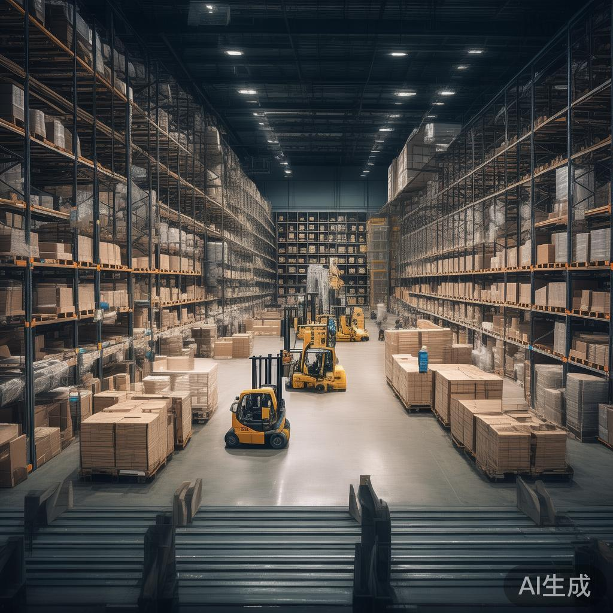
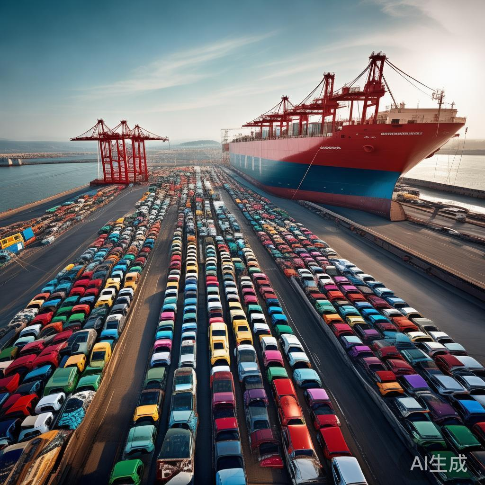
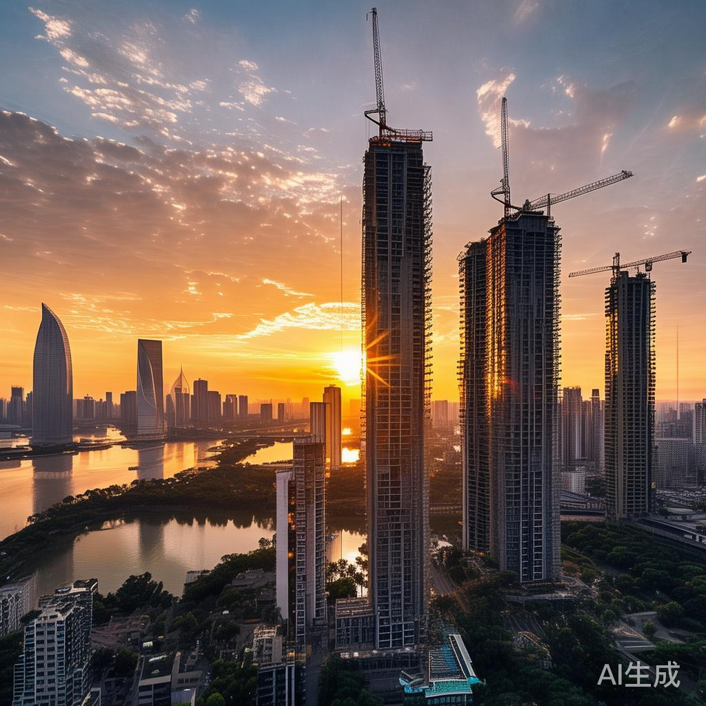
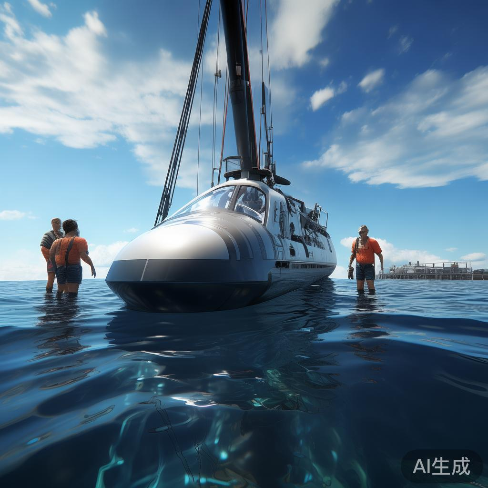
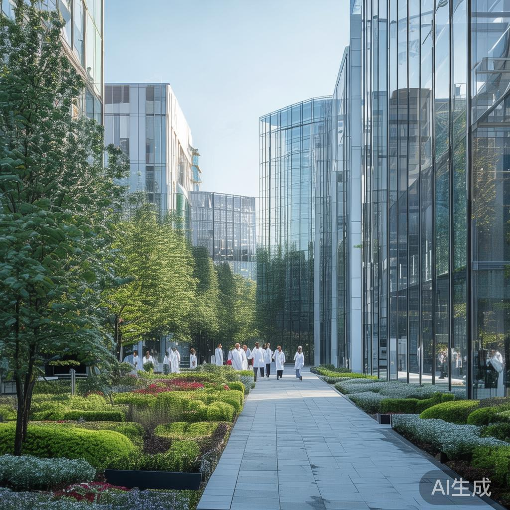
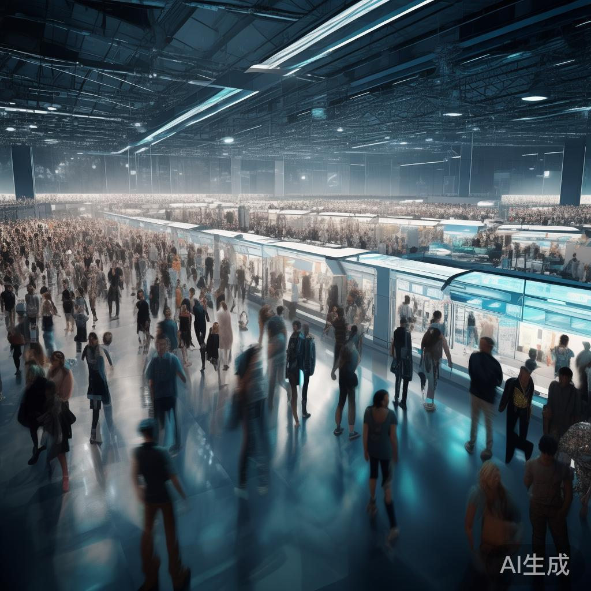
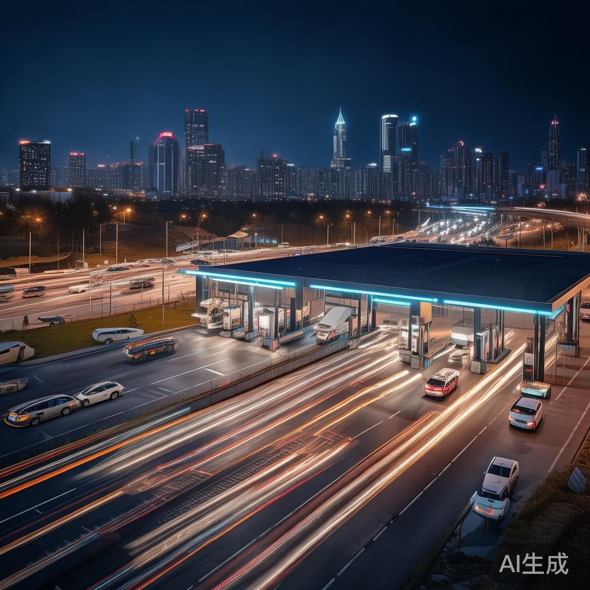

01
沙特利雅得机场遭袭致12死309伤 多国联军指认胡塞武装所为
沙特民航总局11日凌晨公告确认，利雅得哈立德国王国际机场10日遭袭击，已致12人死亡、309人受伤，死伤者包括多国公民。沙特主导的联军指认也门胡塞武装发动袭击并称其“犯下战争罪”，11日凌晨又拦截摧毁一枚胡塞弹道导弹，美方强烈谴责并称一名美国人在袭击中遇难。
国际
沙特民航总局11日凌晨公告确认，利雅得哈立德国王国际机场10日遭袭击，已致12人死亡、309人受伤，死伤者包括多国公民。沙特主导的联军指认也门胡塞武装发动袭击并称其“犯下战争罪”，11日凌晨又拦截摧毁一枚胡塞弹道导弹，美方强烈谴责并称一名美国人在袭击中遇难。
据报道，美俄会谈在能源领域达成合作共识，乌克兰总统泽连斯基对此感到“遭背叛”。美国总统建议乌克兰更换领导人，马斯克也称泽连斯基“做得太过分了”。自9月初美方特使穿梭斡旋后，俄乌三方会谈能否重启仍存变数。
据六名知情人士透露，美国司法部正调查ABC、CBS、CNN、NBC和福克斯新闻等主要电视网在集体暂停对特朗普“共享报道”一事中的角色。司法部反垄断部门回应称，只是在开展调查，以确定这些新闻机构是否违反了反垄断法。
飓风“伊萨亚斯”9日晚在美国佛罗里达州登陆，带来狂风和强降雨，已造成至少4人死亡。另据美国国家飓风中心消息，四级飓风“西蒙”正朝墨西哥中西部移动，预警区内人员被要求赶在天气转恶前完成防灾准备。
据彭博报道，欧盟领导人下周在布鲁塞尔开会时将讨论一份经过缩减的预算方案。此前在部分成员国施压下，谈判代表已大幅削减最初提案，爱尔兰还提出了一项相关动议，各方围绕资金分摊的博弈仍在继续。
因美加贸易战冲击，克利夫斯旗下加拿大钢企Stelco致信加政府，通知拟裁员约百人。加拿大部长乔利回应称，政府期望Stelco履行对工人作出的承诺，法务团队正在审查相关信函，贸易摩擦的外溢效应持续显现。

中国物流与采购联合会11日发布数据，9月份中国物流业景气指数继续保持在扩张区间，较上月有所回升。物流需求持续回暖，企业经营韧性不断显现，行业活跃度进一步提升，为四季度经济运行提供支撑。
据中国物流与采购联合会航空物流分会消息，9月份全国共新开15条国际航空货运航线，每周往返航班量达到42个，我国国际航空货运网络加快织密，跨境电商与高附加值货物的航空运力持续增强。
经济日报刊文称，盘活赛事经济、放大赛事红利，关键在于贴合大众需求、补齐产业短板，把赛场热度转化为可持续的民生红利和经济增量。赛事好不好，最终要看群众的获得感和参与度，长效运营比短期流量更重要。
经济日报金观平撰文指出，中国人民银行近日明确人民币汇率政策立场，中国没有必要、也无意通过汇率贬值获取贸易优势。文章强调，稳汇率背后是基本面支撑与政策工具储备，中国有底气保持人民币汇率基本稳定。

据南京海关消息，今年前9个月，长江流域最大的汽车出口枢纽太仓口岸出口汽车108万辆，历史首次突破100万辆大关。滚装航线与江海联运体系持续完善，助力国产汽车加速出海，出口结构不断优化。
统计显示，1—8月深圳全市高技术产业投资同比增长42.8%，其中信息服务业、计算机及办公设备制造等领域增势突出。高技术产业持续扩容，为工业升级与创新城市建设注入动能。

“8·28新政”实施细则落地后的广州楼市，正从土地竞买热度和市场实际成交两大维度回应市场关切。10月9日黄埔科学城地块引来多家头部房企竞价，核心区新盘到访量与成交量同步走高，头部房企正重新加仓广州。

10月10日，搭载“蛟龙”号载人潜水器的“深海一号”船抵达西太平洋东加罗林海盆作业区，潜水器随后入海，计划下潜约4500米开展调查作业，为大洋深海资源勘查与环境评价积累第一手资料。

诺华上海园区在落成十周年之际宣布，与投资及运营合作伙伴携手在张江科学城新增一处产业化基地布局，聚焦创新药研发与本地化生产转化，进一步充实上海生物医药产业生态。

第140届广交会将于10月15日至11月4日分三期在广州举行，第一期以“先进制造”为主题，17个专区集结未来新兴产业硬核科技，集中展示智能装备、新能源与新材料等领域的最新成果。
10月10日，市场监管总局就《食品安全法（修订草案征求意见稿）》公开征求意见。此次大幅修订聚焦新兴食品业态监管、违法处罚力度提升等社会关切，专家呼吁进一步细化网络销售食品的责任链条。
10月10日，川渝联合印发《重庆都市圈建设“十五五”实施方案》，支持川渝高竹新区培育壮大智能网联新能源汽车配套、新材料产业集群，推动都市圈基础设施互联互通与产业协作进一步提速。

深圳皇岗口岸是深港间唯一实行24小时通关的大型陆路口岸。升级后的新皇岗口岸将于明日开通，旅检能力和通关体验全面升级，“全天候通道”将进一步夯实深港融合发展的联通基础。
雄安新区正加快打造总部经济高地。目前京雄快线已启动全线贯通试运行，预计年内具备与北京大兴机场线贯通运营条件；随着央企总部与各类机构陆续落地，雄安承接北京非首都功能疏解的承载能力持续增强。
💬 评论区